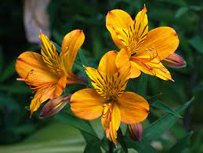
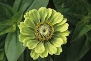
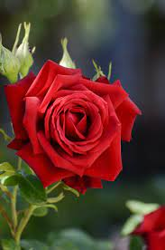
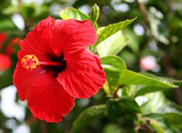

FLOWER SITE
LEGAR_COMPANY
TYPES OF FLOEWERS
THERE ARE MANY TYPES OF FLOWERS THEY ARE:
- ASTROMERIA FLOWER 
- ZINNIA FLOWER 
- ALAMANDA FLOWER
- ROSE FLOWER 
- CALLA LILY FLOWER
- HIBISCUS FLOWER 
- SUNFLOWER
Alstroemeria (/ˌælstrɪˈmɪəriə/), commonly called the Peruvian lily or lily of the Incas, is a genus of flowering plants in the family Alstroemeriaceae. They are all native to South America, although some have become naturalized in the United States, Mexico, Australia, New Zealand, Madeira and the Canary Islands. Almost all of the species are restricted to one of two distinct centers of diversity; one in central Chile, the other in eastern Brazil. Species of Alstroemeria from Chile are winter-growing plants, while those of Brazil are summer growing. All are long-lived perennials except A. graminea, a diminutive annual from the Atacama Desert of Chile.
Zinnia is a genus of plants of the tribe Heliantheae within the family Asteraceae.[3][4] They are native to scrub and dry grassland in an area stretching from the Southwestern United States to South America, with a centre of diversity in Mexico. Members of the genus are notable for their solitary long-stemmed 12 petal flowers that come in a variety of bright colors. The genus name honors German master botanist Johann Gottfried Zinn (1727–59).[5]

Allamanda is a genus of flowering plants in the family Apocynaceae. They are native to the Americas, where they are distributed from Mexico to Argentina. Some species are familiar as ornamental plants cultivated for their large, colorful flowers. Most species produce yellow flowers; A. blanchetii bears pink flowers.[2] The genus name Allamanda honors the Swiss botanist and physician Frédéric-Louis Allamand (1736–1809).[3] It is the official flower of Kuching North City Hall.[4]
A rose is either a woody perennial flowering plant of the genus Rosa (/ˈroʊzə/),[1] in the family Rosaceae (/roʊˈzeɪsiːˌiː/),[1] or the flower it bears. There are over three hundred species and tens of thousands of cultivars.[citation needed] They form a group of plants that can be erect shrubs, climbing, or trailing, with stems that are often armed with sharp prickles.[citation needed] Their flowers vary in size and shape and are usually large and showy, in colours ranging from white through yellows and reds. Most species are native to Asia, with smaller numbers native to Europe, North America, and northwestern Africa.[citation needed] Species, cultivars and hybrids are all widely grown for their beauty and often are fragrant. Roses have acquired cultural significance in many societies. Rose plants range in size from compact, miniature roses, to climbers that can reach seven meters in height.[citation needed] Different species hybridize easily, and this has been used in the development of the wide range of garden roses.

"Lily" and "Lilies" redirect here. For other uses, see Lilium (disambiguation), Lily (disambiguation), and Lilies (disambiguation). For other plants called lilies, see List of plants known as lily. Lilium Lilium candidum 1.jpg Lilium candidum Scientific classificatione Kingdom: Plantae Clade: Tracheophytes Clade: Angiosperms Clade: Monocots Order: Liliales Family: Liliaceae Subfamily: Lilioideae Tribe: Lilieae Genus: Lilium L.[1] Type species Lilium candidum L.[2] Species List of Lilium species Synonyms[1] Lirium Scop., nom. illeg. Martagon Wolf Martagon (Rchb.) Opiz, nom. illeg. Nomocharis Franch. Lilium (/ˈlɪliːəm/)[3] is a genus of herbaceous flowering plants growing from bulbs, all with large prominent flowers. They are the true lilies. Lilies are a group of flowering plants which are important in culture and literature in much of the world. Most species are native to the northern hemisphere and their range is temperate climates and extends into the subtropics. Many other plants have "lily" in their common names, but do not belong to the same genus and are therefore not true lilies.
Hibiscus[2][3] is a genus of flowering plants in the mallow family, Malvaceae. The genus is quite large, comprising several hundred species that are native to warm temperate, subtropical and tropical regions throughout the world. Member species are renowned for their large, showy flowers and those species are commonly known simply as "hibiscus", or less widely known as rose mallow. Other names include hardy hibiscus, rose of sharon, and tropical hibiscus.
The common sunflower (Helianthus annuus) is a large annual forb of the genus Helianthus. It is commonly grown as a crop for its edible oily seeds. Apart from cooking oil production, it is also used as livestock forage (as a meal or a silage plant), as bird food, in some industrial applications, and as an ornamental in domestic gardens. Wild H. annuus is a widely branched annual plant with many flower heads. The domestic sunflower, however, often possesses only a single large inflorescence (flower head) atop an unbranched stem. The binomial name Helianthus annuus is derived from the Greek Helios 'sun' and anthos 'flower', while the epithet annuus means 'annual' in Latin.